품질경영산업기사 (2015-03-08 기출문제)
1과목: 실험계획법
1. 단순회귀분석에서 회귀선에 의해 설명되지 않는 잔차에 관한 설명으로서 틀린 것은?
- 잔차들의 합은 0이 아니다.
- 분산분석 작성시 잔차변동의 자유도는 (n-2)이다.
- 잔차들의 xi에 대한 가중합(Weighted sum)은 0이다.
- 잔차들의 yi에 대한 가중합(Weighted sum)은 0이다.
(정답률: 67%)

2. 인자 A의 수준수가 4이고, 인자 B의 수준수가 3이며, 반복이 2회인 2원배치법에 의하여 실험한 결과, 자료의 총합이 18일 때 수정항은 얼마인가?
- 0.75
- 1.5
- 13.5
- 27.0
(정답률: 60%)
3. Ls(27)형 직교 배열표에서 기본표시가 ab인 곳에 P인자, bc가 나타나는 열에 Q인자를 배치했을 때 P×Q 가 배치되어야 할 열의 기본표시는?
- a
- c
- ac
- ab2c
(정답률: 80%)
4. 라틴방격법으로 얻어진 실험 데이터의 분산 분석 후 두 인자의 수준 조합에서 모평균에 대한 100(1-α) 신뢰구간을 추정하고자 한다. 이때 이용해야 할 유효반복수는? (단, k는 수준수)
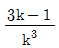
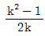
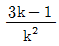
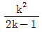
(정답률: 88%)
5. 실험계획법의 목적으로 가장 거리가 먼 것은?
- 공정의 이상원인을 조처하기 위한 것이다.
- 실험에 대한 계획방법을 의미하는 것이다.
- 최소의 실험횟수에서 최대의 정보를 얻을 수 있는가를 계획하는 것이다.
- 해결하고자 하는 문제에 대하여 실험을 어떻게 행하는 지를 계획하는 것이다.
(정답률: 94%)
6. ℓ=4, m=3인 일원배치 실험에서 분산분석 결과 Ve=0.0465 이고,
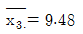
이라면 μ(A3를 α=0.01로 구간추정하면? (단, t0.995(8)=3.355, t0.99=2.896)- 9.119≤μ(A3≤9.841
- 9.062≤μ(A3≤9.898
- 9.168≤μ(A3≤9.792
- 9.118≤μ(A3≤9.842
(정답률: 75%)
7. 반복 3회인 모수모형 2원배치 실험에서 인자 A가 5수준, 인자 B가 6수준이라면 교호작용 A×B 의 자유도는?
- 4
- 5
- 20
- 60
(정답률: 94%)
8. 1원배치법의 분산분석표에서 다음의 [데이터]를 얻었다. SA는 약 얼마인가?
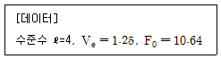
- 17.80
- 23.25
- 25.54
- 39.90
(정답률: 80%)
9. 다음은 반복이 일정한 어느 변량모형 일원배치 실험 결과이다. 설명 중 가장 거리가 먼 것은?
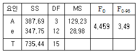
- 인자 A가 유의하여도 인자의 각 수준에서 모평균의 추정은 의미가 없다.
- 유의수준 5%로 인자 A가 유의하므로
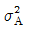
의 추정이 필요하다. - 실험에 적용된 변량인자 A의 수준 수는 4 이다.
- 인자 A의 분산의 추정치는
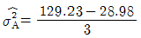
이다.
(정답률: 87%)
10. 3×3 라틴방격법에서 오차변동 SE가 24.4 일 때, VE 값은?
- 6.10
- 8.13
- 12.20
- 24.40
(정답률: 64%)
11. 반복없는 이원배치법에서 유효반복수를 구할 때 사용하는 가장 올바른 공식은?
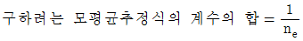
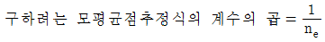
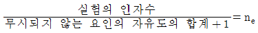
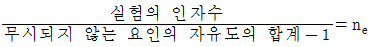
(정답률: 40%)
12. 다음은 보일러 부식으로 SO3% 가 문제가 되어 기름의 종류(A)에 따른 SO3% 를 측정한 데이터와 분산분석표이다. μ(A2) 와 μ(A4) 의 평균치 차를 구간 추정하면 약 얼마인가? (단,α=0.⑤, t0.95(14)=1.761, t0.975=(14)=2.145, t0.95(3)=2.353, t0.975(3)=3.182)
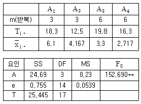
- 1.161≤μ(A2)-μ(A4)≤1.739
- 1.098≤μ(A2-μ(A4≤1.802
- 1.064≤μ(A2-μ(A4≤1.836
- 0.928≤μ(A2-μ(A4≤1.972
(정답률: 71%)
13. 직교배열표에서 하나의 인자의 효과를 구할 때 다른 인자의 효과에 의한 치우침이 없게 된다. 이것은 어떤 원리인가?
- 교락의 원리
- 직교화의 원리
- 반복의 원리
- 랜덤화의 원리
(정답률: 52%)
14. A(모수인자), B(변량인자) 난괴법의 데이터 xij=μ+ai+bj+eij(i=1,2,.....,ℓ, j=1,2,...,m) 구조식에서 기본 가정으로 틀린 것은?
- COV(eij, b)=0 이다.
- b 는 확률변수로
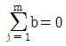
이다. - a 는 상수이고
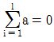
이다. 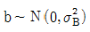
이고, 서로독립이다.
(정답률: 68%)
15. 다음의 분산분석표에서 vT 의 값은?
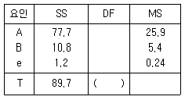
- 9
- 10
- 12
- 16
(정답률: 82%)
16. 모수인자 A를 5수준으로 택하고 랜덤으로 4일을 택하여 각일을 블록 B로 하여 난괴법에 의한 실험을 한 결과 다음의 분산분석표를 얻었다. 일간분산(日間分散)
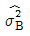
의 추정치는?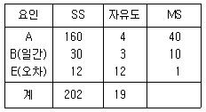
- 1.80
- 2.25
- 3.00
- 10.00
(정답률: 62%)
17. 반도체 물성연구에서 소결시편의 밀도를 최대로 하는 실험조건을 찾기 위해 관심영역에서 소결온도(A)를 3수준 SB함량(B)을 4수준으로 실험한 결과 T1∙=209.⑤, T2∙=199.98, T3∙=177.61, T∙1=153.45, T∙2=156.78, T∙3=143.87, T∙4=132.54이고 분산분석한 결과 오차항의 분산 VE=0.19일 때 인자 A의 A1수준과 A3수준의 모평균차에 대한 95% 신뢰구간은? (단, t0.975=2.447)
- 5.52 ~ 6.28
- 6.25 ~ 7.28
- 7.52 ~ 8.28
- 7.11 ~ 8.61
(정답률: 74%)
18. 반복이 있는 2원배치법에서 A는 4수준, B는 5수준, 반복 3회에서 1개의 결측치가 있어서 이를 추정치로 메꾸어 놓고 분산분석하였을 때 오차항의 자유도는?
- 19
- 20
- 39
- 40
(정답률: 76%)
19. 인자 A,, B가 모두 모수인 2원배치 실험을 하여 다음과 같은 [분산분석표]를 얻었다. 오차의 순변동 Se은?
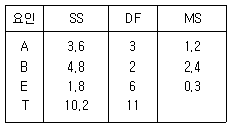
- 0.3
- 2.4
- 2.7
- 3.3
(정답률: 63%)
20. a의 수준수는 ℓ, 반복수는 M인 1원배치의 계수형 데이터의 분석 시 오차항에 관한 정규가정 중 옳은 것은? (단, P는 부적합품률이고 p＜0.5 이다.)
- MP＞5
- M(1-P)＜5
- ℓP＞5
- ℓ(1-P)＜5
(정답률: 59%)
2과목: 통계적품질관리
21. 어떤 제품에 대한 온도와 치수 사이의 관련성을 조사하기 위해 상관분석을 실시하니 다음과 같은 데이터를 얻었다. S(xx)=331, S(yy))=253, A(xy)=137 일 때, 상관계수(r)값은 약 얼마인가?
- 0.473
- 0.563
- 0.764
- 0.892
(정답률: 70%)
22. 어떤 제품의 도장상태를 확인하였더니, k=20, ∑c=36 으로 관측되었다. 부적합수(c) 관리도를 설계할 때, 관리한계선이 옳은 것은?
- LCL=0.22, UCL=4.21
- LCL=-0.02, UCL=5.82
- LCL은 고려하지 않음, UCL=4.21
- LCL은 고려하지 않음, UCL=5.82
(정답률: 83%)
23. 관리도에 대한 다음 설명에서 틀린 것은?
- 우연원인에 의한 공정의 변동은 원인의 규명과 제거가 어렵다.
- P관리도에서 부적합품률은 낮을 수록 좋으므로 관리하한선이 필요 없다.
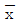
관리도에서 시료의 크기를 증가시키면 관리한계선의 폭은 좁아진다.- P관리도에서 각 시료군의 크기가 다르면 관리한계선에 요철이 생긴다.
(정답률: 63%)
24. 계량단위가 틀리는 두 자료나 평균의 차이가 큰 두 로트의 상대적 산포도(散布度)를 비교하기 적합한 것은?
- 표준편차(s)
- 분산(s2)
- 변동계수(CV)
- 범위(R)
(정답률: 69%)
25. X-N(-4.19, 5.16) 일 때 표준화된 정규확률변수 μ 는? (단, X 는 확률변수이다.)
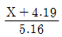
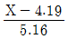
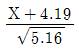
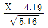
(정답률: 63%)
26. 모수추정치로 사용하는 통계량이 모수값을 중심으로 분포하는 특성은?
- 일치성
- 유효성
- 불편성
- 충분성
(정답률: 60%)
27. KS Q ISO 2859-1:2010 계수치 샘플링검사 절차-제1부:로트별 합격품질한계(AQL) 지표형 샘플링검사 방안에서 보통검사에서 사용하는 지표로, 현상의 검사 결과가 수월한 검사로의 전환기준을 결정하는 것은?
- 전환 스코어
- 부적합 스코어
- 부적합품 스코어
- 합부 판정 스코어
(정답률: 77%)
28.  관리도의 계수 중 A2는 무엇을 나타내는가?
관리도의 계수 중 A2는 무엇을 나타내는가?
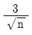
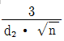
- 3σ
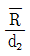
(정답률: 81%)
29. 통계량
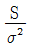
는 어떤 분포를 따르는가?- X2 분포
- t 분포
- F 분포
- 정규분포
(정답률: 85%)
30. OC 곡선에 대한 설명으로 옳은 것은? (단, N은 로트의 크기, n은 시료의 크기, c는 합격판정개수이며, N/n≥10 이다.)
- N,n을 일정하게 하고, c를 증가시키면 OC 곡선의 기울기는 급해진다.
- N,c를 일정하게 하고, n을 증가시키면 OC 곡선의 기울기는 완만해진다.
- OC 곡선은 일반적으로 계량 샘플링검사에 한하여 적용할 수 있는 것이다.
- n,c를 일정하게 하고 N을 변화시켜도 OC 곡선의 모양에는 별로 큰 영향이 없다.
(정답률: 62%)
31. 임의의 공정에서 추출된 크기 9의 시료에 포함된 특수 성분의 함량(g)을 조사해보니 시료평균
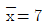
이고, 시료표준편차 s=0.234 이다. 모평균의 95% 신뢰구간은 약 얼마인가? (단, t0.975(8)=2.306 이다.)- (6.80, 7.20)
- (6.82, 7.18)
- (6.84, 7.16)
- (6.86, 7.14)
(정답률: 82%)
32. 다음 중 모부적합수(m0)에 대한 검정을 할 때 산출하는 검정통계량(μ0)의 표시로 옳은 것은? (단, 시료 부적합수는 x이다.)
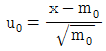
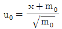
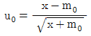
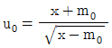
(정답률: 56%)
33. 관리도 상의 점이 관리한계선 밖으로 나올 경우 가장 먼저 조치하여야 하는 사항은?
- 공정을 변경시킨다.
- 기계를 조정하여 바로 잡아야 한다.
- 원인을 분석하고 이상원인을 제거한다.
- 부적합품이 발생하고 있으므로 전수검사를 한다.
(정답률: 94%)
34.
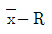
관리도에서 의 변동(
의 변동(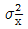
)은 군간변동(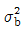
)과 군내변동(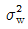
)으로 표현된다. 틀린 것은? (단, k : 군의 수, n : 시료의 크기,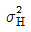
: 개개 데이터의 산포이다.)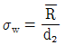
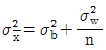
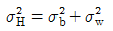
- 완전한 관리상태일 때
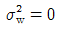
(정답률: 70%)
35. 10개 중 4개의 부적합품이 있는 로트에서 2개의 시료를 비복원추출 했을 때 나타나는 부적합품수를 X라 하면 X의 기대치는?
- 0.4
- 0.5
- 0.6
- 0.8
(정답률: 42%)
36. 주사위를 던져서 짝수(2, 4, 6)가 나오는 사상은 A, 2보다 같거나 작은 수(1, 2)가 나올 사상을 B라 하면 사상 A 또는 B가 나타나는 확률은?
- 2/3
- 1/6
- 5/6
- 1/12
(정답률: 72%)
37. 합리적인 군으로 나눌 수 없는 경우 k=25,, ∑x=154.6, ∑Rs=8.4일 때 x 관리도의 관리상한(UCL)은?
- 5.253
- 5.293
- 7.075
- 7.115
(정답률: 66%)
38. KS Q 0001 : 2013 계수 및 계량 규준형 1회 샘플링 검사 제3부 : 계량 규준형 1회 샘플링 검사 방식(표준편차기지)에서 로트의 평균치를 보증하기 위한 경우 시료의 크기가 25개이고, 1-α= 0.95 일 때 G0 의 값은?
- 0.190
- 0.329
- 0.392
- 0.400
(정답률: 41%)
39. 평균 출검 품질 한계를 뜻하는 용어는?
- AQL
- AOQL
- OC
- LQ
(정답률: 71%)
40. 계량 샘플링검사와 계수 샘플링검사의 비교 설명 중 틀린 것은?
- 품질표시 방법이 다르다.
- 검사 방법상 계수검사가 기록이 간단하다.
- 검사기록의 이용도는 계수검사가 다양하다.
- 적용상 이론적 제약은 계량검사가 많이 받는다.
(정답률: 66%)
3과목: 생산시스템
41. 작업분석에서 중점적으로 검토하는 사항들을 열거한 것 중 가장 관계가 먼 것은?
- 제조공정
- 작업환경
- 시설배치
- 미세동작분석
(정답률: 52%)
42. 세탁기 B형을 생산하는 Y회사에서는 이에 필요한 엔진을 자체 생산한다. 이 엔진에 대한 수요는 연간 60,000개이다. 이 회사는 1년에 300일 가동하는데 엔진의 하루 생산율은 400개이다. 1회 생산준비비용은 10,000원이고 재고유지비용은 1년에 1단위당 600원이다. 경제적 생산량을 생산하는 경우 조달기간(lead time)이 1일이라고 할 때 재주문점은 얼마인가?
- 50개
- 150개
- 200개
- 500개
(정답률: 66%)
43. JIT시스템의 특징으로 틀린 것은?
- 공정품질의 향상 및 신뢰도가 증대된다.
- 설비배치의 변경 및 공정 유연성이 증대된다.
- 푸쉬방식(push system)의 자재흐름이 적용된다.
- 신속한 작업전환이 이루어져야 하므로 다기능 작업자가 필요하다.
(정답률: 90%)
44. 생산 및 보전 측면에서 고장을 일으켜도 그 영향이 매우 적고 보전상의 손실이 적은 경우 적용되는 보전방식은?
- 사후보전
- 예지보전
- 보전예방
- 상태보전
(정답률: 57%)
45. 어떤 공사의 정상소요시간이 10일, 특급소요시간이 6일이고 정상소요비용은 100,000원, 특급소요비용은 150,000원일 때 10일 만에 공사를 완료한다면 이때의 소요비용은 얼마인가?
- 110,000원
- 115,000원
- 120,000원
- 125,000원
(정답률: 78%)
46. 다음 표와 같은 단일 설비 일정계획에서 최소여유시간(MST)에 의한 작업순위로 옳은 것은?
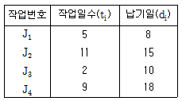
- J1→J2→J3→J4
- J1→J3→J2→J4
- J4→J1→J2→J3
- J4→J3→J1→J2
(정답률: 83%)
47. 포드 시스템과 가장 관계가 먼 것은?
- 표준화
- 표준과업
- 동시관리
- 콘베이어 시스템
(정답률: 81%)
48. 다음 [보기] 중 도요타 생산방식의 일반적인 특징으로만 나열된 것은?
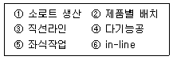
- ①, ②, ④
- ①, ④, ⑥
- ②, ③, ⑤
- ②, ④, ⑥
(정답률: 74%)
49. 지수평활법의 특징으로 옳은 것은?
- 전문가의 경험과 직관을 요구한다.
- 라이프사이클의 자료를 기초로 한다.
- 기술예측 등 장기수요예측에 많이 사용된다.
- 과거로 거슬러 올라갈수록 자료의 중요성이 감소된다는 가정이 타당하다.
(정답률: 64%)
50. 시계열 분석에 있어서 추세변동을 T, 계절변동을 S, 순환변동을 C, 불규칙변동을 R, 수요를 Y라고 하면, 승법 모델에서 계절변동 (S)를 나타내는 공식은?
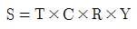
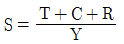
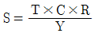
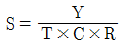
(정답률: 67%)
51. MTM법에서 90초는 약 몇 TMU 인가?
- 908
- 2500
- 4176
- 15000
(정답률: 56%)
52. 작업의 동작을 분해 가능한 최소한의 단위로 분석하여 비능률적인 동작을 줄이거나 배제시켜 최선의 작업방법을 추구하는 연구방법은?
- 동작분석
- 공정분석
- 작업분석
- 다중활동분석
(정답률: 83%)
53. 일정계획의 주요통제기능으로 일정계획에 따라 작업이 순조롭게 진행되는가를 체크하는 것은 무엇인가?
- 일정계획
- 진도관리
- 공수관리
- 라인편성
(정답률: 67%)
54. MRP시스템의 한 분류인 순변환(net change)시스템의 내용으로 틀린 것은?
- 다른 유형에 비해 변화에 민감하다.
- 필요할 때마다 기록을 새로 계산한다.
- 계산시간이 적게 소요되며, 동적시스템에 적합하다.
- 재고에 정확성이 크며, 적당한 시기에 자재를 이용할 수 있다.
(정답률: 50%)
55. 라인밸런싱 해법에서 가장 일반적으로 사용되는 방법은?
- 탐색법(Heuristic method)
- 시뮬레이션
- 동적계획법
- 선형계획법
(정답률: 66%)
56. 자재조달 과정의 일반적 단계에 속하지 않는 것은?
- 주문의 추적
- 공급자 선정
- 작업표준작성
- 구매요구의 접수
(정답률: 55%)
57. 단속생산스스템의 일정계획순서로 가장 올바른 것은?
- 부하할당→총괄계획→상세일정계획→작업순위결정
- 부하할당→총괄계획→작업순위결정→상세일정계획
- 총괄계획→상세일정계획→부하할당→작업순위결정
- 총괄계획→부하할당→작업순위결정→상세일정계획
(정답률: 40%)
58. 성능열화로 나타나는 현상으로 틀린 것은?
- 충격
- 파손
- 마모
- 오손
(정답률: 66%)
59. 작업수행과정에서 불규칙적으로 발생하여 정미시간에 포함시키기 곤란하거나, 바람직하지 못한 작업상 지연을 보상하여 주기 위한 여유는?
- 관리여유
- 작업여유
- 직장여유
- 피로여유
(정답률: 65%)
60. 대체안 작성을 위한 집단의 아이디어 도출방법이 아닌 것은?
- KJ법
- 고든법
- 체크리스트법
- 브레인스토밍법
(정답률: 60%)
4과목: 품질경영
61. 업무를 실행해 나가는 과정에서 발생할 수 있는 모든 상황을 상정하여 가장 바람직한 결과에 도달할 수 있도록 프로세스를 정하고자 한다. 어떤 기법을 활용하는 것이 가장 바람직한가?
- PDPC
- PDCA
- 연관도
- 매트릭스도
(정답률: 73%)
62. 제품규격이 18.5±0.5 인 경우에 샘플의 평균치  =18.8 이었다. CPK 의 값은 약 얼마인가? (단, 표준편차 σ=0.1 이다.)
=18.8 이었다. CPK 의 값은 약 얼마인가? (단, 표준편차 σ=0.1 이다.)
- 0.07
- 0.67
- 1.33
- 2.00
(정답률: 36%)
63. 다음 중 공정개선이 필요한 경우가 아닌 것은?
- 정해진 표준대로 작업할 수 없어서 결과가 목표치에 미달될 경우
- 해당 공정작업자의 작업표준 미준수로 설비 이상이 자주 발생되는 경우
- 시장 또는 고객요구 변화에 따라 더욱 높은 수준의 공정을 필요로 하는 경우
- 정해진 표준대로 작업해도 얻어진 결과가 목표에 미달되어 개선이 필요한 경우
(정답률: 81%)
64. Single PPM 추진 내용 중 개선단계(L)에서 추진할 내용은?
- 요구품질파악
- 공정현상조사
- 3차원 대책수립
- 부적합유형 분석
(정답률: 65%)
65. 산업표준화로 인하여 얻을 수 있는 이점으로 틀린 것은?
- 자동화
- 자원절약
- 호환성
- 다품종 소량생산
(정답률: 79%)
66. 제품책임대책은 소송에 지지 않기 위한 방어와 결함제품을 만들지 않기 위한 예방대책으로 구분된다. 다음 중 방어대책으로 보기 어려운 것은?
- 책임의 한정
- 손실의 분산
- 손실확대방지
- 제품안전 확보
(정답률: 59%)
67. 품질보증의 개념에 관한 설명 중 틀린 것은?
- 품질보증은 검사의 기능이다.
- 제품에 대한 소비자와의 약속이며 계약이다.
- 품질이 소정의 수준에 있음을 보증하는 것이다.
- 제품품질에 대해 소비자가 안심하고 오래 사용할 수 있음을 보증하는 것이다.
(정답률: 86%)
68. 축의 외경이 49.98-50.02㎜ 이고 구멍의 내경이 50.02-50.08㎜ 일 때 제품에 관한 최소틈새를 구하면 얼마인가?
- -0.10㎜
- 0.00㎜
- 0.04㎜
- 0.06㎜
(정답률: 72%)
69. KS A 0001:2008 표준서의 서식 및 작성방법에서 한정, 접속 등에 사용하는 용어에 대한 설명 중 틀린 것은?
- “때”는 한정 조건을 나타낼 때 사용한다.
- “혹은”은 선택의 의미로 나눌 때 사용한다.
- “경우”는 다시 크게 병합할 필요가 있을 때 사용한다.
- “시”는 시기를 명확히 할 필요가 있을 경우에 사용한다.
(정답률: 80%)
70. 다음 품질비용에 관한 설명으로 틀린 것은?
- 실패비용은 내부 실패비용과 외부 실패비용으로 나눌 수 있다.
- 파이겐바움에 의하면 실패비용은 총품질비용의 70%정도 차지한다.
- 무결점 견해에 의하면 품질수준이 높아짐에 따라 품질 비용은 낮아진다.
- 내부 실패비용은 그 중요성이 외부 실패비용보다 상대적으로 날로 증가하고 있다.
(정답률: 79%)
71. 사내 표준화의 대상으로 틀린 것은?
- 순서
- 방법
- 절차
- 노하우(Know-how)
(정답률: 90%)
72. 산점도에 대해 설명한 것 중 틀린 것은?
- 요인 X가 증가함에 따라 또 다른 요인 Y도 증가하는 패턴을 정상관이라 한다.
- 요인 X가 증가함에 따라 또 다른 요인 Y가 감소하는 패턴을 부상관이라 한다.
- 요인 X의 변화에 상관없이 또 다른 요인 Y가 변하는 패턴을 무상관이라 한다.
- 요인 X가 변화함에 따라 또 다른 요인 Y가 일정한 패턴을 일정상관이라 한다.
(정답률: 68%)
73. 파이겐바움은 품질관리부서의 업무분담을 품질관리기술, 공정관리기술, 품질정보기술로 나누고 있다. 다음 중 품질관리기술부문에 해당되지 않는 것은?
- 품질능력평가
- 품질관리교육
- 품질관리계획
- 품질목표설정
(정답률: 57%)
74. KS Q ISO 9001:2009 품질경영시스템-요구사항에서 품질매뉴얼에 포함되어야 할 사항이 아닌 것은?
- 품질경영시스템 프로세스 간의 상호작용에 대한 기술
- 품질경영시스템을 위하여 수집된 문서화된 절차 또는 그 절차의 인용
- 품질경영시스템 운영에 필요한 구체적인 절차서 작성 요령 및 첨부 문서
- 적용의 제외에 대한 상세한 내용 및 정당성을 포함한 품질경영시스템의 적용범위
(정답률: 41%)
75. 측정 시스템의 변동에서 다루는 항목이 아닌 것은?
- 재현성
- 랜덤성
- 선형성
- 반복성
(정답률: 70%)
76. 방침관리가 가장 잘되고 있는 회사를 설명하고 있는 것은?
- A회사는 사장의 올해 사업목표를 A회사 작업자가 잘 알고 있다.
- B회사는 방침관리를 추진하기 위하여 전문팀을 구성하였다.
- C회사는 품질분임조 활동을 통하여 회사 방침을 수행한다.
- D회사는 매주 관리자 방침회의를 열고 있다. 이 회의 내용은 비밀이다.
(정답률: 83%)
77. KS Q ISO 9000:2007 품질경영시스템-기본사항 및 용어에서 품질경영원칙에 해당되지 않는 것은?
- 리더십
- 목표중심
- 전원참여
- 지속적개선
(정답률: 67%)
78. 산업표준화의 실시가 생산 제조업체에 미치는 효과로 틀린 것은?
- 분업생산, 생산능률 향상
- 제품품질 향상, 자재절약 도모
- 기호에 맞는 것을 자유롭게 선택
- 양산성 확보, 종업원 숙련도 증진
(정답률: 89%)
79. 고객만족의 품질을 만들기 위해선 고객의 요구를 정확하게 알아야 한다. 고객요구 확인에 대한 설명으로 틀린 것은?
- 기업에서 성공한 제품은 언제나 고객의 요구에 맞춘 것이다. 고객의 요구는 언제나 새로운 제품을 창조한다.
- 기업은 제품을 만든 사람의 의도와는 다르게 사용하는 고객의 요구를 고려하여 제품을 만든다.
- 기업에선 지역에 따른 문화적 차이를 고려하여 고객의 요구에 맞춰야한다.
- 고객은 자신의 실제적 요구를 상품이 제공할 수 있는 서비스로 요구한다. 즉, 실제는 수송을 필요로 하는 것을 자동차로 요구한다.
(정답률: 66%)
80. 어떤 제품의 규격이 7.220-8.340 이고 n=5, k=20 의 데이터를 취해  관리도를 작성하였다. 공정능력치를 구하면 약 얼마인가? (단, 관리도는 관리상태이며 , d2=2.326 이다.)
관리도를 작성하였다. 공정능력치를 구하면 약 얼마인가? (단, 관리도는 관리상태이며 , d2=2.326 이다.)
- ±0.047
- ±0.012
- ±0.035
- ±0.077
(정답률: 35%)